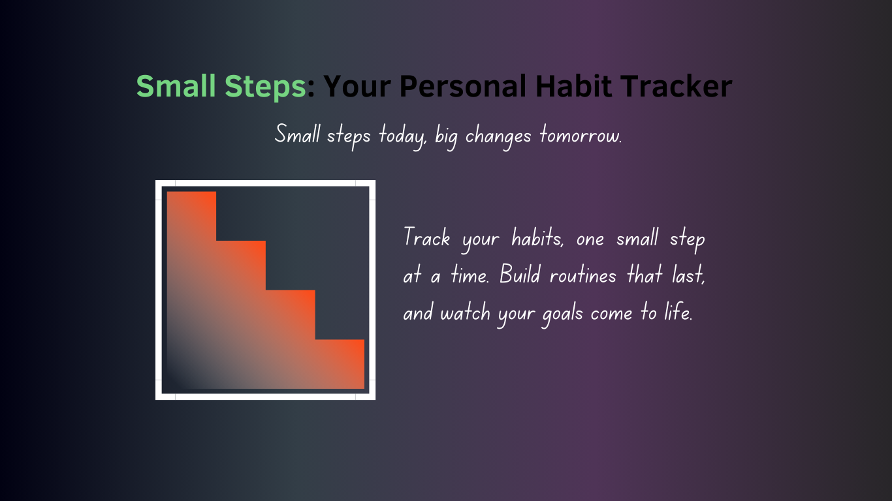

Home
How to Use this Habit Tracker Website

To track your habits: Add daily habits you want to build, like: exercising, drinking water, reading, etc. and mark them accordingly as you go.
example below:
| Habits |
Day 1 |
Day 2 |
Day 3 |
Day 4 |
Day 5 |
Day 6 |
Day 7 |
| Exercise |
done ✅ |
undone ❌ |
undone ❌ |
done ✅ |
done ✅ |
done ✅ |
done ✅ |
| Read (insert name of book here) |
undone ❌ |
undone ❌ |
undone ❌ |
done ✅ |
done ✅ |
undone ❌ |
undone ❌ |
| Take Spanish classes |
done ✅ |
done ✅ |
done ✅ |
done ✅ |
done ✅ |
done ✅ |
done ✅ |
1. Guest Mode:
- Use the app without signing up to test how it works.
- Note: Your data won't be saved. If you leave or refresh the page, your progress will be lost.
2. Sign Up to Save Your Progress:
- Create a free account to save your habits and track your journey over time.
- After signing up, you can log in anytime to view, update, or add new habits.
3. Take Control of Your Journey:
Stay consistent and work toward your goals with this simple, effective tracker designed to keep you motivated.
Return to the homepage to get started.